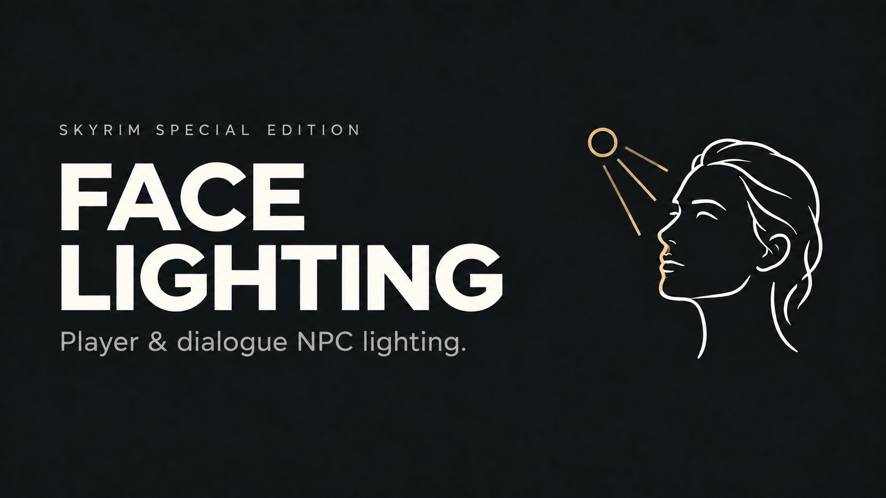

FACE LIGHTING
Player & dialogue NPC lighting.
Adjustable face lighting for you and the people you talk to.
Add a gentle fill light to the player's face or your current dialogue partner. Tune each light separately, preview changes in-game, and keep the look that suits your setup.
Two lights. Your settings.
- Player face light — Toggle with L. Off by default, with an adjustable shortcut. Visible in third person.
- Dialogue face light — Automatically lights the current dialogue partner in first or third person. Optional fade-in and fade-out, with adjustable duration.
- Independent controls — Adjust intensity, position, and color temperature from 2000–10000 K. Set the radius in regular mode, or use CS inverse-square falloff with a range derived from intensity.
- Live configuration — Three pages: General, Player face light, and NPC face light. English and Simplified Chinese, with automatic Windows language detection.
Get started
Install with your mod manager and launch through SKSE. No ESP or Papyrus scripts are included.
Required
SKSE64 and Address Library, matching your game version.
For the in-game menu
SKSE Menu Framework. You can also edit Data/SKSE/Plugins/FaceLighting.ini and restart.
Open FaceLighting in the framework. Changes preview immediately and remain while switching pages. Save all settings keeps them; closing the menu discards unsaved edits. Keep your existing INI when upgrading.
Community Shaders
CS is optional. Recognized builds offer inverse-square falloff with automatic linear-light flags and calibrated intensity. Regular lighting remains available without CS.
One setup step: in General, match “My CS global Linear Lighting is enabled” to your actual CS setting. This selects the face lights' color handling; it does not turn on CS. Update it whenever you change the global CS option.
Compatibility
Skyrim 1.5.97 has passed in-game testing. The plugin is built for SE/AE; use dependencies matching your runtime. VR is not supported.
CS testing primarily used a Jiaye experimental build. The recognized protocol families are CS 1.6.0 / 1.8.4 with ISL 1-3-0 metadata; this does not mean every build has been tested. ENB is not yet validated.
Lights are shadowless and can also illuminate nearby objects. Actors need a standard head node. Dialogue detection uses Skyrim's standard dialogue menu and speaker; replacement dialogue systems may need separate support. Persistent lighting for manually selected NPCs is not included in this release.
Feedback & credits
When reporting an issue, include your game/SKSE version, CS build if used, reproduction steps, and FaceLighting.log with Debug logging enabled. Add a crash log for crashes.
Thanks to the SKSE, CommonLib, Address Library, and SKSE Menu Framework contributors. Color-temperature approximation is based on Tanner Helland's work.
Developed with AI assistance and refined through hands-on testing. The cover is AI-generated promotional artwork, not an in-game screenshot.